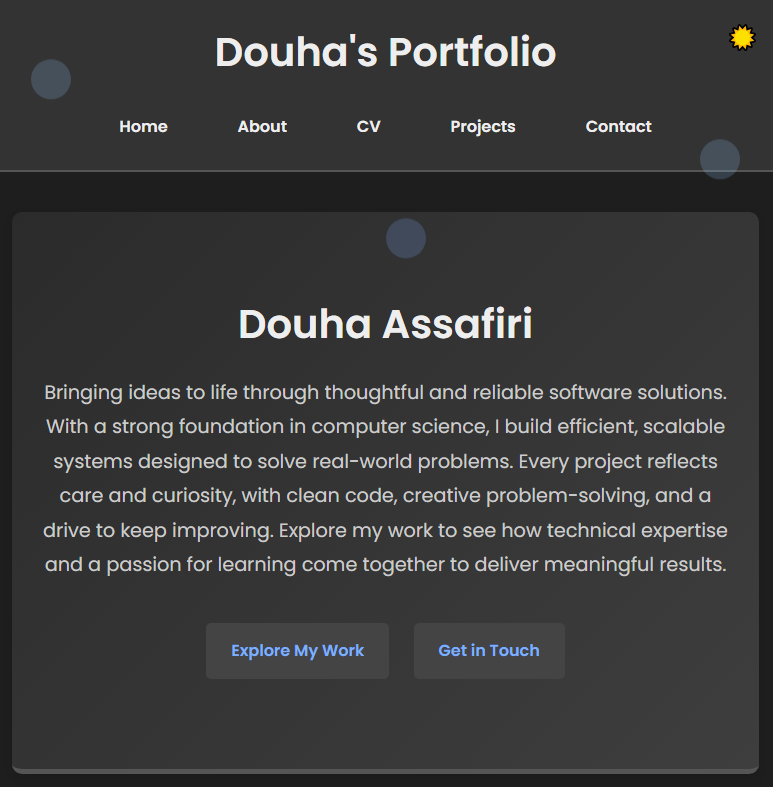
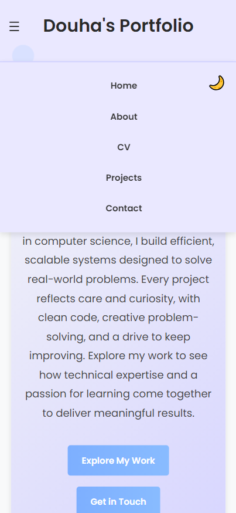
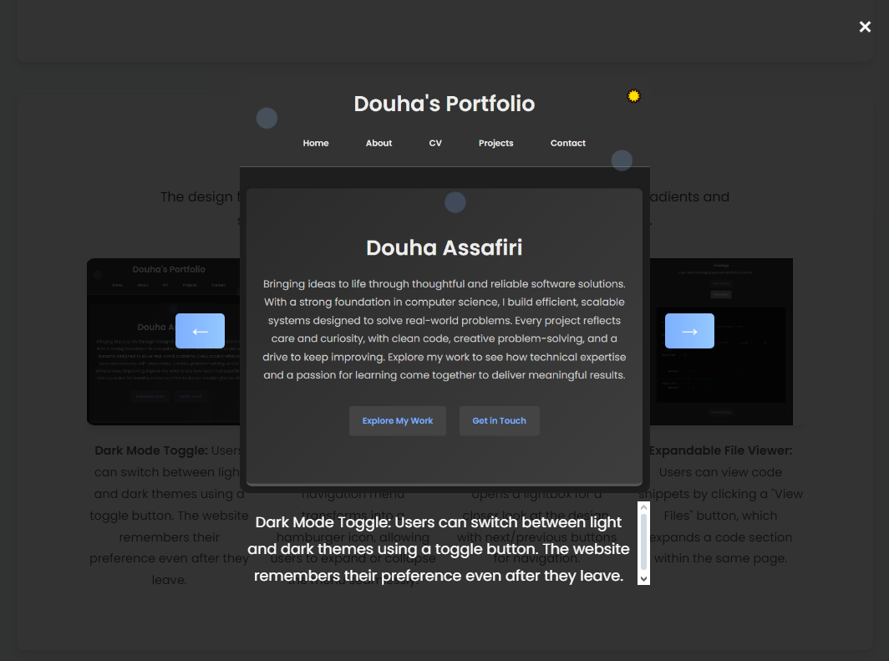
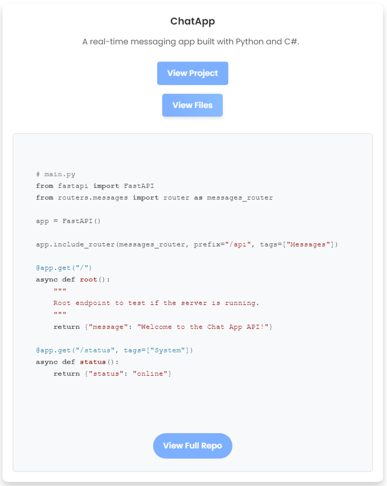

Introduction
Project Overview
This portfolio website serves as a showcase for my creative and technical projects, combining a clean aesthetic with interactive elements to engage visitors.
It was built from scratch using HTML, CSS, and JavaScript, ensuring that the website is responsive and user-friendly across various devices.
Purpose and Goal
The primary goal of this project is to create a polished, organized online presence where collaborators and employers can learn more about me and explore my work.
Key Features
- Responsive Design: The layout adapts seamlessly across desktops, tablets, and smartphones.
- Light/Dark Mode: Visitors can switch between light and dark modes, with the website remembering their preferences for future visits.
- Interactive Project Sections: The project pages feature dynamic effects like "view files" buttons that expand and collapse to show project code samples.
- Smooth Scroll Effects: Sections fade into view as visitors scroll, adding visual interest without overwhelming the content.
- Improved Navigation: A hamburger menu provides intuitive access to key sections on mobile, while the desktop layout retains simple navigation links.
Development Tools
- Languages: HTML5, CSS3, JavaScript.
- Design Inspiration: The color palette and typography were chosen to create a calm, clean interface with a personal touch.
- Code Editor: Visual Studio Code was used for its rich extensions and debugging features.
- Version Control: Git and GitHub for version history and collaboration.
Design Elements
The design focuses on minimalism with meaningful accents, using soft gradients and subtle animations to create a professional yet welcoming feel.

Users can switch between light and dark themes using a toggle button. The website remembers their preference even after they leave.

On smaller screens, the navigation menu transforms into a hamburger icon, allowing users to expand or collapse the menu seamlessly.

Clicking on project images opens a lightbox for a closer look at the design, with next/previous buttons for navigation.

Users can view code snippets by clicking a "View Files" button, which expands a code section within the same page.
Challenges and Solutions
- Light/Dark Mode Toggle: Implementing local storage to remember user preferences was essential to provide a consistent experience across sessions.
- Responsive Design: Ensuring that images, text, and animations scaled well on various screen sizes required thorough testing and CSS adjustments.
- Scroll Animation Timings: Adjusting the animation delays and durations helped create a balanced and visually engaging experience without slowing down the browsing experience.
Conclusion
This portfolio website reflects my dedication to creating thoughtful and effective user experiences. It showcases my coding abilities, attention to detail, and creative approach to web development.
Future improvements could include adding animated wave dividers for transitions between sections, implementing a contact form with real-time validation, and building a "blog" section to share technical insights.